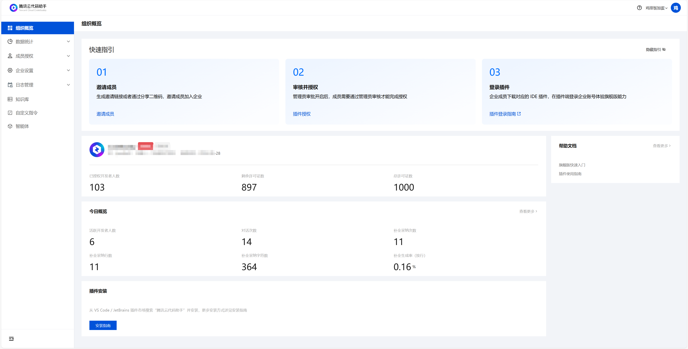
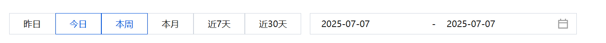
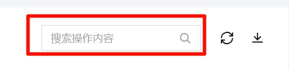
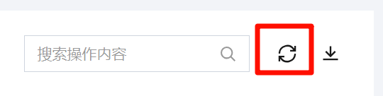
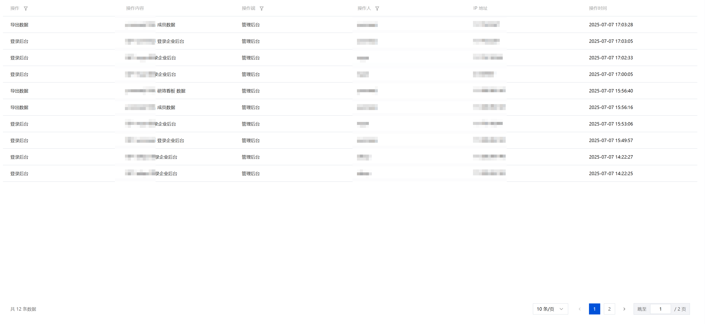
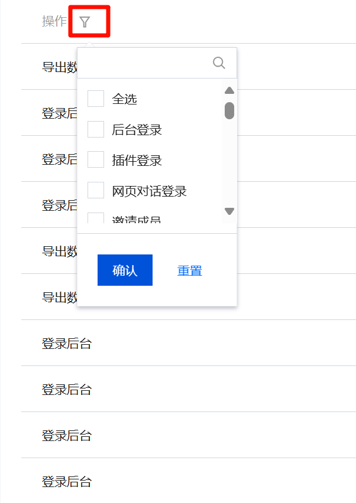
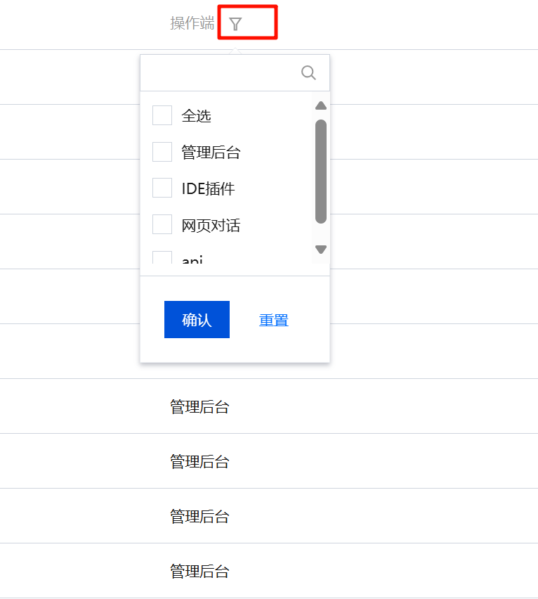
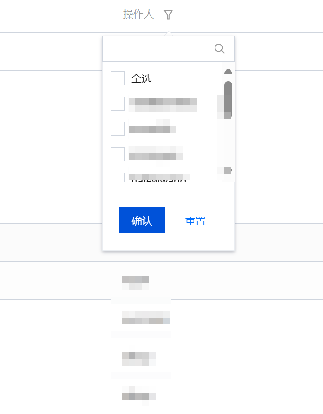
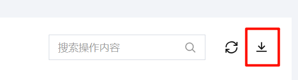

腾讯云代码助手支持企业管理员在企业后台查看企业成员的操作日志，包括操作人、操作内容、操作时间等等，帮助企业管理员统一管理日志，实现企业成员的操作可查看可追溯，可用于团队协作追溯、问题排查与安全合规。
登录企业后台
企业管理员可以登录企业后台进行日志管理。

操作日志
日期筛选
支持按昨日、今日、本周、本月、近7天、近30天这些日期筛选项进行快捷筛选，以及支持手动选择日期进行筛选。通过快捷筛选，您可以快速查看操作日志。

搜索
除了日期筛选外，您还可以通过搜索操作内容，根据操作内容文本来模糊匹配，进行快速筛选操作日志。

刷新
点击刷新按钮，可以对当前页面进行刷新，同步最新的操作日志数据。

操作日志列表内容
列表内容包括操作、操作内容、操作端、操作人、IP 地址、操作时间的列表字段，按时间顺序进行排列展示，最新的数据在前。

操作
指操作类型，包括后台登录、插件登录、网页对话登录、邀请成员、审批成员、添加成员等等，并且支持点击筛选按钮进行筛选，支持输入搜索，如下图所示。

操作内容
指记录企业成员具体的操作内容，例如记录成员导出数据、登录企业后台的操作。
操作端
操作端包括企业管理后台、IDE 插件、网页对话、API，记录企业成员在哪个操作端进行操作，并且支持点击筛选按钮进行筛选，支持输入搜索。

操作人
记录了操作日志的所属人，包括企业内的所有成员，以及已删除的成员。支持点击筛选按钮进行快速筛选，并且支持输入搜索。

IP 地址
记录了企业成员在操作端进行操作的 IP 地址。
操作时间
记录了操作人操作的时间戳，目前仅精确到秒。
导出操作日志
支持点击下载按钮导出操作日志的 Excel 文件，文件中除了操作列表中的字段外，还包括了企业名称和数据的统计时间。
